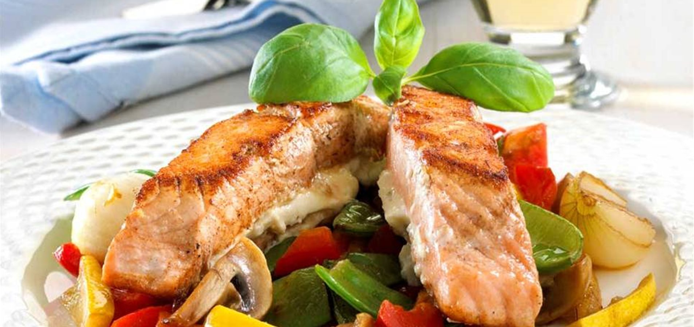

Stekt Laks
Oppskrift
- Legg laksen til tining tildig på morgenen dersom den er frosset.
- Kok opp vann og ha oppi en boil-in-bag rispose.
- Sett stekepannen på middels varm, og ha på smør når pannen er varm nok.
- Stek siden på laksen uten skinn i et halv minutt.
- Snu laksen slik at skinnsiden er ned mot stekepannen.
- Salt fisken og sett på et lokk.
- Ha i passelig mengde grønnsaker fra "rock wok"-posen i stekepannen, rundt laksen.
- La fisken og grønnsakene steke i 5-8 minutter.
- Når fisken er ferdig stekt kan peppre den, og servere med rømme og sweet chili saus.